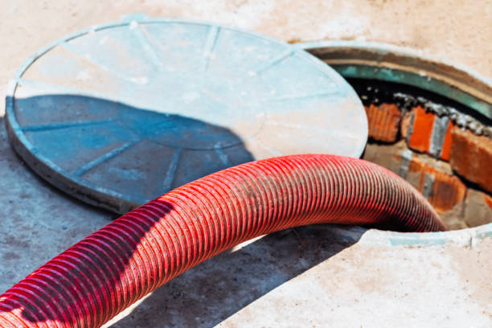

USA - Nationwide
info@asapstatewideseptic.pro
USA - Nationwide
info@asapstatewideseptic.pro

Looking to install a new septic tank? Our expert team offers reliable septic tank installation services that comply with local regulations and are tailored to your property.
Get expert septic tank installation services today! Ensure your system's reliability and longevity with our professional team in Usa - Nationwide to enhance your property's functionality.
Residential & commercial septic service
Quality services at affordable prices
Immediate 24/ 7 emergency services


In today's world, ensuring your home's waste management system operates efficiently is critical for a clean and healthy living environment. At septic service, we specialize in providing top-notch residential septic services . Our team of experienced professionals has the knowledge and tools to handle all aspects of septic system management, including installation, repair, maintenance, and inspection.
Investing in regular septic services not only guarantees the longevity of your system but also prevents potential health hazards associated with malfunctioning systems. From conducting thorough inspections to scheduling regular cleanings, our proactive approach helps homeowners avoid costly repairs. With our expertise in the latest technologies and techniques, you can rest assured your septic system will be in the best possible hands.
Customer satisfaction is our top priority. We pride ourselves on our transparent pricing, exceptional customer service, and commitment to eco-friendly practices. Choose septic service for your residential septic needs, and experience the peace of mind that comes with a dependable waste management system.

A malfunctioning septic tank can be a major inconvenience, potentially leading to costly damages. At septic service, we offer expert septic tank repair services aimed at quickly identifying and resolving issues. Our seasoned technicians utilize state-of-the-art technology and diagnostic tools to pinpoint problems and provide effective solutions. We pride ourselves on our prompt service and customer-focused approach, ensuring that you receive the best repair options available. Trust us to restore your septic system to optimal performance and prevent future complications.

Regular pumping of your septic tank is vital to maintaining its health and functionality. Our septic tank pumping services offer you the peace of mind that comes with knowing your system is in good hands. Over time, solids build up in your tank, and without timely pumping, you face the risk of clogs, backups, and costly repairs.
We recommend a pumping frequency based on household size and tank size. Our experienced team uses state-of-the-art equipment and eco-friendly methods to safely pump and dispose of waste. By choosing us, you are partnering with experts who prioritize environmental sustainability while ensuring your septic system operates at peak efficiency.

Maintaining a clean septic tank is crucial for the overall health of your system. At septic service, we offer comprehensive septic tank cleaning and maintenance services that keep your system running smoothly. Our team employs specialized equipment to clean your tank and eliminate any buildup that could lead to future problems. We also provide insightful maintenance tips to help you prolong the lifespan of your system. With our reliable services, you can enjoy worry-free operation of your septic system for years to come.

A septic system inspection is a vital part of home ownership, particularly if you're purchasing or selling a property. At septic service, we specialize in septic system inspections providing comprehensive evaluations to identify any potential issues that could affect the system's longevity or compliance with local regulations.
Our licensed professionals use advanced diagnostic tools to assess the health of your septic system thoroughly. We provide clear and detailed reports, empowering you to make informed decisions regarding repairs or replacements. Our commitment to transparency and customer education makes us the preferred choice for septic system inspections . With septic service, you can ensure peace of mind regarding your waste management system.

Regular septic system inspections are crucial for ensuring your system operates efficiently and safely. At septic service, we provide comprehensive septic system inspections that identify potential issues before they escalate. Our certified inspectors assess the condition of your tank, lines, and drains, providing a thorough evaluation that allows you to make informed decisions regarding repairs or upgrades.
Our inspection process follows industry best practices and local regulations, ensuring that you receive an accurate and reliable assessment. We use advanced diagnostic equipment to identify problems that may not be visible, providing you with peace of mind that your system is in good working order.
When you choose our inspection services, you can trust that we prioritize quality and transparency. We thoroughly explain our findings and recommend solutions tailored to your needs. Our commitment to customer service in Usa - Nationwide ensures you feel confident in your septic system after our visit.

Damaged or blocked septic lines can lead to severe problems, including unsightly backups and potential health hazards. Our expert team provides efficient septic line repair services focusing on restoring functionality as quickly as possible. We can detect and resolve issues like leaks, blockages, and displaced lines with precision.
By opting for our septic line repair services, you gain access to advanced diagnostic tools, ensuring timely repairs and a thorough understanding of the problem at hand. Our skilled technicians are always ready to tackle any challenges you may face, with commitment to quality, value, and customer satisfaction.

If you’re experiencing septic system issues but can’t pinpoint the cause, our septic system troubleshooting services can help. Our team of experienced professionals knows how to diagnose complex problems through detailed examinations and assessments to get your system back on track.
We understand the nuances behind septic systems, which allows us to offer tailored solutions to resolve your troubles effectively. Our proactive approach ensures minimal disruption and optimal results. By choosing our troubleshooting services, you partner with a team that emphasizes transparency and communication throughout the process.

A properly functioning septic pump is crucial for moving wastewater efficiently from your home to the septic tank. At septic service, we specialize in septic system pump installation services providing high-quality pumps designed to meet the specific needs of your household.
Our experienced team works diligently to select and install the right pump for your system's requirements, ensuring optimal performance and longevity. We also educate our clients on routine maintenance to keep the pump running smoothly, highlighting our commitment to customer service and satisfaction. Choose septic service for your septic system pump installation and experience efficient waste management at its best.

Septic backup can be a nightmare for homeowners. At septic service, we provide specialized services focused on septic backup prevention and effective solutions . Our team is dedicated to educating homeowners on proper system usage and maintenance to avoid frustrating backups.
We offer comprehensive inspections to identify potential risks and provide tailored maintenance plans. In case of emergencies, our rapid response team can quickly address backups and resolve issues to prevent further damage. Ultimately, our commitment to excellence and customer satisfaction sets us apart as the leading provider of septic backup prevention solutions .

In the heart of any thriving business lies a commitment to excellence, and that includes maintaining an effective septic system. Our commercial septic services are tailored to meet the demands of businesses of all sizes, providing everything from routine maintenance to emergency repairs.
Our team understands the complexities involved in commercial septic systems, and we employ a proactive approach to ensure compliance with health and safety standards. With our rapid response times and commitment to quality, we help ensure your business operations run smoothly without interruption.

Installing a robust and compliant septic system is crucial for any commercial property. At septic service, we excel in commercial septic system installation ensuring your business has a reliable waste management solution tailored to your needs.
Our experts conduct thorough site evaluations to determine the optimal system design that complies with local codes and regulations. We pride ourselves on using high-quality materials and advanced technologies for installations that stand the test of time. By choosing septic service, you'll benefit from our knowledge and experience, ensuring your septic system meets current standards and operates efficiently.

Regular septic tank pumping is crucial for maintaining the health of your commercial septic system. At septic service, we provide efficient septic tank pumping services tailored for businesses . Our experienced technicians utilize advanced equipment to ensure a thorough pumping that minimizes business interruptions. We offer flexible scheduling options to accommodate your business hours, ensuring your operations remain smooth and hassle-free. Choose us for your commercial pumping needs, and keep your septic system functioning optimally.

For restaurants and commercial kitchens, proper grease trap maintenance is crucial for keeping your plumbing and septic systems functioning correctly. Our grease trap and commercial waste removal services in Usa - Nationwide are tailored to meet the rigorous demands of the food service industry, ensuring compliance and safeguarding your business's reputation.
By choosing our services, you benefit from our expertise in managing hazardous waste responsibly and in accordance with local regulations. We pride ourselves on delivering effective solutions to keep your systems clear and compliant, ensuring smooth operations for your business.

A well-designed septic system is the foundation of any successful commercial enterprise. Our septic system design and consultation services in Usa - Nationwide focus on optimizing your waste management needs while adhering to local regulations. Our experienced consultants work closely with you to develop a tailored plan that meets your business's specific demands.
We utilize advanced design principles and industry knowledge to provide systems that are efficient, sustainable, and cost-effective. Trust our expertise for a thorough consultation that ensures your septic system is reliable for years to come.

Restaurants and hotels require reliable septic systems to ensure their operations run smoothly. At septic service, we specialize in septic system repair for restaurants and hotels in Usa - Nationwide, tackling issues that could disrupt your business.
Our experienced technicians promptly identify and resolve septic issues using the best practices in the industry. We understand the urgency of these repairs and prioritize quick response times to avoid interruptions to your operations. With our expertise, septic service ensures your septic system remains a dependable asset for your business.

Large buildings require specialized septic systems built to handle increased waste volume. At septic service, we provide high-capacity septic systems designed for large buildings ensuring your waste management needs are met without compromising on efficiency or compliance.
Our team conducts comprehensive evaluations to determine the right system size and design tailored to your property’s requirements. We utilize advanced technologies and materials to deliver robust septic solutions that handle high volumes of waste seamlessly. Trust septic service for effective high-capacity septic systems that support your property's operational needs.

Navigating the complexities of septic system compliance can be daunting for business owners. Our services focus on ensuring that your commercial property meets all local health and safety regulations. We conduct thorough inspections and provide recommendations to bring your system up to standard.
We keep abreast of local codes and compliance requirements, ensuring you remain ahead of any regulations that might impact your business. Trust our expertise to help you maintain a compliant and functional septic system, safeguarding your investments.

When septic emergencies arise, prompt action is crucial for commercial operations. At septic service, we offer emergency septic services that are available 24/7 for businesses in Usa - Nationwide. Our fast response team is equipped to handle any septic crisis, minimizing downtime and damage to your facility. With our expertise and commitment to excellence, you can trust us to restore functionality quickly and effectively. Choose our emergency services to ensure your business stays up and running during unexpected septic issues.

Regular inspections are vital for the proper functioning of septic systems in commercial buildings. At septic service, we specialize in septic system inspections for commercial properties identifying potential issues before they escalate.
Our skilled inspectors utilize advanced technology to conduct thorough evaluations, providing you with detailed reports on system performance and maintenance suggestions. We focus on minimizing disruptions to your business by scheduling inspections at your convenience. Schedule with septic service for dependable inspections that support the longevity of your septic system.

Managing sewage effectively is crucial in any business operation. At septic service, we specialize in designing and installing sewage treatment systems tailored to your commercial needs. Our experienced team assesses your property's requirements and provides innovative solutions that are efficient and compliant with local standards. We focus on delivering high-quality installations that support your business's sustainability objectives. Choose us for your sewage treatment needs and benefit from our expertise and dedication to service.

At septic service, we understand that each property has unique septic needs. We provide specialized septic services tailored to a variety of scenarios, ensuring each customer's needs are met.
Whether you require septic tank location services, odor control solutions, or maintenance for aerobic septic systems, our team of experts is equipped to assist you. We pride ourselves on personalized service and thorough assessments, ensuring no detail is overlooked. Contact septic service for specialized septic solutions designed just for you.

Locating a septic tank is essential for maintenance and repairs. At septic service, we offer professional septic tank location services to help you pinpoint your system accurately. Our team uses advanced detection equipment and techniques to locate tanks efficiently, minimizing disruption to your property. Understanding the importance of timely service, we strive to provide accurate assessments quickly. Trust our experienced professionals to help you manage your septic system with ease.

Unpleasant odors around your septic system can indicate deeper issues that need addressing. At septic service, we offer effective septic tank odor control solutions in Usa - Nationwide to restore comfort and safety to your property.
Our team identifies the source of odors through thorough inspections and provides targeted solutions to eliminate them permanently. We use eco-friendly products and methods to ensure your property remains healthy and safe. Choose septic service for reliable odor control in your septic system.

Unpleasant odors from your septic system can be more than just a nuisance; they can indicate underlying issues. At septic service, we specialize in septic tank odor control solutions designed to eliminate foul smells and address the core issues causing the problems.
Our team conducts thorough assessments to identify the source of odors, whether it's a build-up of solids, improper ventilation, or other issues. We provide practical solutions tailored to your specific situation, ensuring that odors are mitigated effectively.
Choosing septic service for odor control means selecting a partner that understands the importance of a clean and pleasant environment. We take pride in our customer service, working to ensure your home or business maintains a fresh atmosphere while safeguarding your septic system.
Rural properties require specialized septic solutions due to their unique challenges. At septic service, we provide septic system pumping services specifically designed for rural properties in Usa - Nationwide. We understand the conditions and regulations governing rural septic systems, ensuring that our services are compliant and effective.
Our team uses advanced pumping equipment to handle the demands of rural installations, providing reliable waste removal that prevents backups and maintains system efficiency. We also offer flexible scheduling options to accommodate the often-variable use of septic systems in rural settings.
Investing in our septic system pumping services means selecting a team that prioritizes the needs of rural property owners. We are dedicated to maintaining your system's functionality so you can enjoy the peace and beauty of rural living without worry.
For properties with challenging soil conditions or high water tables, aerobic septic systems present an effective solution. At septic service, we specialize in the installation and repair of aerobic septic systems tailored to the unique needs of residents .
Our team guides you through the entire process, from system selection to installation and ongoing maintenance. Aerobic systems offer enhanced waste treatment, making them ideal for properties where traditional systems may fail to perform effectively.
When you choose us for your aerobic septic system needs, you receive a comprehensive service that focuses on compliance, efficiency, and sustainability. Our skilled technicians ensure that your system operates optimally, protecting both your property and the environment.
USA - Nationwide septic service Pros
(877) 848-1711
info@asapstatewideseptic.pro
09.00 AM - 09.00 PM
09.00 AM - 12.00 PM